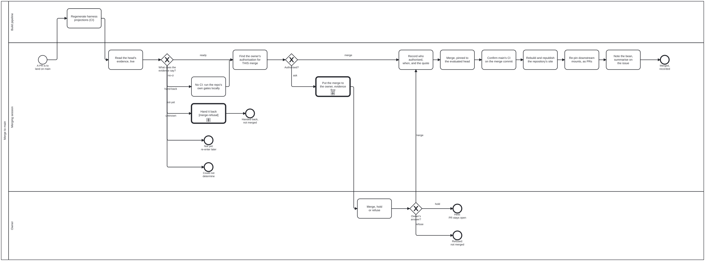

Generated from
cat-harness/skills/sdlc/sdlc-core/merge-to-main.md— do not edit here.
Merge to main — a sub-process with its own gate
processes/sdlc/merge-to-main.bpmn
(Process_MergeToMain) is the process. Its two gateways are computed by
merge-evidence.dmn and
merge-authorisation.dmn.
Every process that ends in a write to main calls it. Today that is
merge-train.bpmn (Call_MergeToMain, in place of the old Task_Release and
Task_Land) and crdm-close.bpmn (Call_MergeToMain, between the recorded
sign-off and the issue close). prepare-merge stops before
it; prepare-merge-auto Phase 4 runs it. A process
that merges without calling it is a process with a hole in it, and the remedy is
a call activity, not a paragraph.
Why this is a process of its own
2026-10-09: one session merged seven pull requests into main across seven
repositories (cat-harness, bootstrap-tools, the tools layer above this one, and
four content instances above that). None of those
repositories runs CI. The owner’s instruction had been “fix all issues until
green”, and the session read it as permission to merge. A safety classifier
flagged the action as “Merge Without Review”. The same instruction then appeared
as the evidence of two trust.consent re-pins in folio-assistant’s
index.config.json.
Nothing stopped it, because merging was never a step: it was the last line of
prepare-merge-auto, a task in merge-train, and a line in CRDM Phase 6.
None of the three could refuse, and none covered a repository with no CI.
The steps
CI regenerates the harness projections on the head
(harness-projections).
The merging session then reads the evidence, runs local gates if there is no
CI, finds the authorisation and asks for it if it is missing. The owner
answers: merge, hold or refuse. The merging session records the answer (not
relaxable), merges pinned to the head, confirms main, re-pins downstream
mounts and reports. Each step’s own text is in the diagram.
The merging session is the merge-steward lane. With a Merge Manager active,
that is the steward. With none active, the PR’s own session takes the lane
(owner ruling 2026-10-06, merge-queue §”When no Merge
Manager is active”). The gate is the same for both.
Evidence — read on the head, live, every time
What lands is the head the evidence was read on. Read these facts from GitHub at the time of the merge. Never use a copy from earlier in the session.
| fact | values | read from |
|---|---|---|
ciState | green, red, pending, none, unreadable | the workflow runs whose head_sha is the PR’s head, per OWED job (merge-queue §”Admission asks which runs are OWED”). Not the PR page, and not the legacy status API. |
mergeable | clean, dirty, unknown | the PR’s mergeable / mergeable_state. unknown stays unknown after a short re-ask. Only dirty is believed on its own (prepare-merge §Guardrails, step 0). |
review | clear, blocking, unknown | open CHANGES_REQUESTED reviews, unresolved threads a reviewer marked blocking, a draft PR, a needs-merge-human label, and Claude Approvals where the repository runs it: its required review or check must be present and approving on this head. A repository that runs it and has no approval on the head is blocking, not clear. |
Where the repository has merge:guard (cat-harness and the instances composed
with it), its evaluate mode IS this step. Exit 0 means green/clean/clear,
exit 1 maps each refused check to its fact, and exit 2 is unreadable, never a
pass. Its eight checks are listed in merge-queue §”A PR lands
only through merge:guard”. Where it does not exist, read the same facts with
the GitHub tools and write each one down with the URL it came from.
merge-evidence.dmn then decides, in this order: hand-back on red, dirty
or blocking (to merge-refusal,
which returns the PR to its owner with the reason); unknown when a fact could
not be read (ends, not merged); not-yet while runs are pending or
mergeability is uncomputed (ends; re-enter later); no-ci on a clean, clear
head with no CI; ready when everything is green, clean and clear.
A repository with no CI is not green (STRICT)
none means nothing tested this head. It is the third state that
ci-health and prepare-merge §”NO CHECKS IS NOT GREEN”
describe, reached by a different route. There, runs were owed and did not
appear. Here, the repository declares no workflow, so no run is owed and none
will ever appear. Zero runs, zero failures: “nothing red” is true and tells
you nothing.
Four consequences:
- No standing waiver covers it. A waiver such as “you may merge green
PRs” names green heads, and a head nothing tested is not one.
merge-authorisation.dmnrouteswaiver+nonetoask. - The merging session runs the repository’s own gates locally
(
Task_LocalGates), on the merge result rather than the branch:bun test, the typecheck, and whatever the repository’s README orpackage.jsonnames. Record each command, its exit code and the SHA it ran on. A local run is evidence the owner can weigh. It is not CI: the container was contended, the tree was yours, and nobody else can re-run it. Say that. - The question to the owner says so in words: “This repository runs no CI. Nothing but my local run tested this head.” An authorisation given without that sentence was given about a different merge.
- After the merge, “main is green” is reported as “not verified: no CI”. It is never “green”.
unreadable is different. It means the runs could not be asked about: no
token, an API error, a rate limit. The remedy is to make the read work, not to
ask permission, so the process ends there.
Authorisation — who, and what counts
Only the owner authorises a merge to main. That means the repository
owner, or the person the session works for when they own the repository. A
sibling session, a Merge Steward, a bot comment, a reviewer approval and the
merging session itself are not the owner. A Claude Approvals approval is
evidence about the change. It is not authorisation to merge it.
Task_ReadAuthorisation classifies what it finds into one value:
authorisation | what it is |
|---|---|
explicit | The owner’s own words, naming this merge. Examples: “merge #12”; “yes, merge it” in reply to a question that named the PR and its evidence; “approve all 6” in reply to a list of six. |
waiver | A node under memory/waivers/ with gate: merge-to-main, in scope and unexpired, carrying all five fields (confirmation-waiver). |
instruction-only | A broad instruction about the work that does not name the merge. |
none | Nothing found. |
unknown | The waivers could not be read, a waiver is malformed, or the conversation the authorisation would be in is not available to this session. |
These are instruction-only, and they do not authorise a merge:
- “fix all issues until green”, “make CI pass”, “get it working”,
“finish this”. They authorise the work, not the write to
main. - “prepare-merge”, “make it mergeable”, “ship it”. The first two are
prepare-merge, which stops before the merge by definition, andprepare-mergelists the third among its own triggers. - Approval of a plan in which merging is a later step.
- A message from another agent or session, however it is phrased. No agent message is the owner’s consent.
- Your own summary of what the owner wanted. If you are composing the sentence, it is not the owner’s.
Why the line is drawn there. A merge publishes the change to everyone who
reads main, and through index.config.json pins to every instance that mounts
the repository. It cannot be taken back quietly: a revert is a second public
change. That makes it the same kind of action as a deletion
(deletion-requires-confirmation):
an outward write that is hard to reverse, owed an explicit yes. An instruction
about the goal does not contain that yes, however confident the reading.
merge-authorisation.dmn decides merge for explicit (over green, or
over none when the question carried the no-CI sentence) and for waiver over
green. Everything else is ask, including waiver over none.
The authorisation is bound to the head it was given against. A push after it
re-opens the question. The one exception is a bot merge of main into the head
with no other change. A batch authorisation covers the PRs listed when it was
given, not PRs that arrive later (owner, 2026-10-04, quoted in
merge-queue §Landing).
Asking — evidence before the question
Task_Ask follows
interaction-modality
§4.1: context, options, recommendation, question. The test is whether the owner
can answer without opening anything. For a merge, that means one row per PR:
| repo | PR | head | CI on head | mergeable | review | local gates (if no CI) | |—|—|—|—|—|—|—|
Then the recommendation, then one question that covers the batch: “Merge these N?” Several repositories are several merges, but one question can authorise all of them, provided every one is a row.
Task_OwnerDecides is the owner’s lane and is fulfilled by a person only. Its
answers are merge, hold or refuse. hold and refuse end the process
with the PR open. Nothing is closed and nothing is deleted.
Recording the authorisation (not relaxable)
An authorisation nobody wrote down cannot be told from one that was never
given. Task_RecordAuthorisation writes it before the merge. The shape
already exists: ReleaseSchema in schemas/merge-queue.ts (bean ixmq), and
this step reuses it rather than inventing a second one.
Where the repository has the merge queue, record it with the command that validates it:
bun run cat merge:queue:decide --pr <n> --verdict merge \
--by <owner's login> --captured-by <your session URL> \
--quote "<the owner's words, verbatim>" --source <where they said it> \
--sha <the head SHA they approved> [--standing-ruling --ruled-at <YYYY-MM-DD>]
It refuses a --by that is a session (the person who decided is never the
agent that wrote it down), a missing quote or source, and a missing SHA.
merge:steward then prints the release against the live head (merge@<sha>,
none, or VOID when the head moved), which is the explicit / waiver /
none reading Task_ReadAuthorisation needs.
Elsewhere (a repository with no queue), post the same fields as a comment on the PR, signed with the session link, and append it to the bean:
merge-authorised:
verdict: merge
decidedBy: <owner's GitHub login>
decidedAt: <ISO-8601 date-time>
authority: explicit | standing-ruling (ruledAt: <date>) | waiver:<waiver node id>
quote: "<the owner's words, verbatim>"
source: <session link or comment permalink>
releasedSha: <the full head SHA being merged>
capturedBy: <your session URL>
ci: green | none (local: <command> exit <code> @ <sha>; ...)
These fields match index.config.json’s trust consent one for one (by,
on, ref, evidence). A quote that is not verbatim is not evidence: a
paraphrase is the thing under suspicion, as
confirmation-waiver says
of a waiver’s quote.
The same rule covers a re-pin’s trust.consent.evidence. It quotes the
owner’s consent to THAT pin. A goal instruction in that field (“fix all issues
until green”) records a consent that was never given.
Merging
Through merge:guard <pr> --merge --session <id> where the repository has it
(it re-evaluates live and pins the PUT to the head); elsewhere with the merge
call pinned to the head SHA, so GitHub refuses if the head moved. A merge
commit unless told otherwise. Never delete the branch
(prepare-merge §Guardrails).
After the merge
Task_ConfirmBase: readmain’s CI on the merge commit. If it is red, fix forward (continual-progress§”Two green PRs can merge into a red main”). With no CI, report “not verified: no CI”. Do not report it as green.Task_Repin: re-pin downstream mounts, as PRs, never as part of this merge. Find the instances whoseindex.config.jsonnames this repository insource.remote.repository. For each, open a PR that movesrefto the merge commit, carries atrust.consentwhoseevidencequotes the owner’s consent to that pin, and regeneratesindex.lock.jsonwithmount:remote(remote-mount,index-config). Each re-pin PR is a merge tomainin another repository, so it runs this sub-process again. The merge authorisation covers the re-pin only if the owner’s words named the re-pin. When no instance mounts the repository, record “no downstream mounts found” and say where you looked.Task_Report: a note on the bean with the merge SHA and the authorisation block, and a round summary on the issue (issue-working). Do not close the issue. In CRDM,crdm-close.bpmncloses it after this sub-process returns, and only on the BA’s authorisation.
What this does not do yet
- Outside the merge queue, no tool prints
authorisation. Where the queue exists,merge:stewardprints the recorded release against the live head andcheck:waiversvalidates the waiver half. ElsewhereTask_ReadAuthorisationclassifies it by reading the conversation, the PR andmemory/waivers/. That is a judgement, and the record makes it auditable. merge:guarddoes not refuse a merge with no recorded release.releaseCoversexists andmerge:stewardreports it, but the guard’s eight checks are about readiness. Making the guard require a covering release would turn this rule into a gate. That is a change tomerge-guard.tsand is not part of this skill.- It does not change
merge:guard’s check 5. In a repository with no workflows, check 5 refuses with “nopull_requestrun names the head”. Read that refusal asciState: noneand take theno-cipath, nothand-back: the PR has no defect for its owner to fix.
Processes that run this skill
This skill has its own process: Merge to main.

| process | step(s) that name it |
|---|---|
| CRDM close-out | Land the feature’s PRs (calls a sub-process) |
| Merge to main | Read the head’s evidence, live; No CI: run the repo’s own gates locally; Hand it back (calls a sub-process); Find the owner’s authorisation for THIS merge; Put the merge to the owner, evidence first; Merge, hold or refuse; Record who authorised, when, and the quote; Merge, pinned to the evaluated head; Confirm main’s CI on the merge commit; Re-pin downstream mounts, as PRs; Note the bean, summarise on the issue |
| A merge train | Land each member (calls a sub-process) |